在描述程序语言的语法结构时，需借助于上下文无关文法，而文法是描述程序语言的依据。
程序语言的定义
程序本质上是一定字符集上的字符串。
语法
语法：一组规则，用它可以形成和产生一个合适的程序。
词法规则：单词符号的形成规则
- 单词符号是语言中具有独立意义的最基本结构
- 一般包括：常数、标识符、基本字、算符、界符等
- 描述工具：有限自动机
语法规则：语法单位的形成规则
- 语法单位通常包括：表达式、语句、分程序、过程、函 数、程序等 ;
- 描述工具：上下文无关文法
语法规则和词法规则定义了程序的形式结构。
语义
语义：一组规则，用它可以定义一个程序的意义
语义分类：
- 静态语义：是一系列限定规则，并确定哪些合乎语法的程序是合适的。
- 动态语义(运行语义、执行语义)：表明程序要做什么，要计算什么。
描述方法：
- 自然语言描述：隐藏错误、二义性和不完整性
- 形式描述：操作语义 (PL/1)、指称语义 (ADA)、代数语义 (PASCAL)
程序语言的基本功能和层次结构
程序语言的基本功能：描述数据和对数据的运算
所谓程序，本质上是描述一定数据的处理过程
程序的层次结构
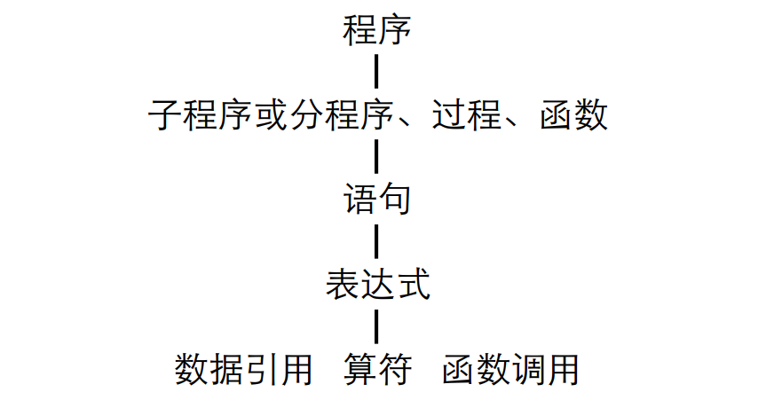
标识符与名字
标识符：以字母开头的，由字母数字组成的字符串。
名字：由值（单元中的内容）和属性（类型和作用域）组成。
名字的性质的说明方式：
-
由说明语句来明确规定
-
隐含说明
FORTRAN 以 I、J、K、…N 为首的名字代表整型，否则为实型
-
动态确定
走到哪里，是什么，算什么
::: tip 标识符与名字的区别
标识符是语法概念，名字是语义概念
:::
若一个标识符 ABC，
- 绑定了一个人，那么 ABC 就是人名
- 绑定了一个国家，那么 ABC 就是国名
程序语言的语法描述
考虑一个有穷字母表 字符集，
-
其中每一个元素称为一个字符(符号)；
-
由 中的字符所构成的一个有穷序列称为 上的字(也叫字符串，符号串)；
-
不包含任何字符的序列称为空字，记为 ；
-
用 表示 上的所有字的全体，包含空字 ；
例如：
设 ，则
-
对于字母表 来说， 上的任意一个子集都称为 上的一个语言，记为 ；
-
语言的每一个字符串称为语言 的一个语句或句子；
::: info 重要约定
- 小写字母 表示字符
- 小写字母 表示字符串
- 大写字母 表示字符串集合
:::
字符串的运算：
-
字符串相等
设 x、y 是 上的两个字符串，若 x 与 y 的诸符号依次相等，则该两符号串相等，记为 。
-
字符串长度
设 x 是 上的字符串，字符串中包含符号的个数称为字符串 x 的长度，用 表示。
-
字符串的连结
设 x 与 y 是 上的两个字符串，把 y 的所有符号相继写在 x 的符号之后所得到的字符串称为 x 与 y 的连结，用 表示。
-
字符串的逆
设 x 是 上的符号串，其逆为符号串 x 的倒置，记为 。
- 若 ，则
-
字符串的前缀、后缀和子串
设 x、y、z 是 上的符号串，则称 x 为符号串 xy 的前缀，y 是符号串 xy 的后缀。x、y、z、xy、yz 是符号串 xyz 的子串。
-
字符串集合的乘积
的子集 和 的**连接（积）**定义为
例如：
设 和 ，那么
-
空集
不含任何元素的集合，记为
-
字符串的幂
设 x 是 上的符号串，则 x 的幂运算为 ，。
例如：
若 ，则 ，，
-
字符串集合的幂
自身的 n 次积记为 （n 个相乘），规定
例如：
若 ，则 ，，
-
集合 A的闭包与正规闭包
记 ，称 是 的闭包。
记 ，称 是 的正规闭包。
大多数情况下，闭包和正规闭包没有太大区别。
例如：
若 ，则 ，
::: tip
- ：一个集合，这个集合里面没有字
- ：一个长度为 0 的字
- ：一个集合，这个集合里面有一个字，但这个字的长度为 0
:::
上下文无关文法
文法的定义
::: info 规则（重写规则、产生式、生成式）
一个规则是一个二元组，通常写作 或 。
称为规则的左部， 称为规则的右部， 和 读作“ 定义为 ”，这是一条关于 的规则（产生式）。
:::
::: info 巴科斯范式 (BNF)
“ ” 也可以用“ ::= ” 表示， 这种表示称为巴科斯范式 (BNF)。
:::
文法： 描述语言的语法结构的形式规则。
一个上下文无关文法 G 是一个四元式 ，其中
- ：终结符集合 ( 非空，有限 )
- ：非终结符集合 ( 非空，有限 ) ，且
- S ：文法的开始符号，它是一个非终结符，至少要在一条规则中作为左部出现，
- P ：产生式集合 ( 非空，有限 ) ，每个产生式形式为 , ,
，称为文法 G 的字母表。
::: info 终结符
终结符是指语言不可再分的基本符号，通常是一个语言的字母表；
终结符代表了语法的最小元素，是一个个体记号。
:::
::: info 非终结符
非终结符也称语法变量，代表语法实体或语法范畴；
:::
如果，，，… ，为了书写方便，可以缩写为
其中，“” 读成 “或”，每个 称为的一个候选式。
表示一个文法时，不用将文法 G 的四元组显式地表示出来，通常只给出开始符号和产生式。
::: info 一般约定
- 第一条产生式的左部是识别符
- 用尖括号括起来的是非终结符（或者用大写字母表示）
- 不用尖括号括起来的是终结符（或者用小写字母表示）
- 将 G 也写成 G[S]，其中 S 是识别符
:::
文法产生的语言
::: warning 推导
在下面的内容中， ” + ”，“ * ” 应该放在的上面，但由于 Markdown 文档没有相关的公式，因此只能写成这样的形式。
:::
设文法，且 ，
如果存在产生式 , ，则称 可直接推导到 ，，或 直接规约到 。
例：
：，
通常，
- 表示从出发，经过一步或若干步，可以推出。
- 表示从出发，经过0 步或若干步，可以推出。
句型：由文法的开始符出发，经过 0 步或有限步推导出来的符号串（，）
句子：由文法的开始符出发，经过 1 步或有限步推导出来的符号串，且该字符串全部由终结符组成（，）
语言：由对应的文法所产生的句子的全体，记为，
例：
证明是文法 ： 的一个句子。
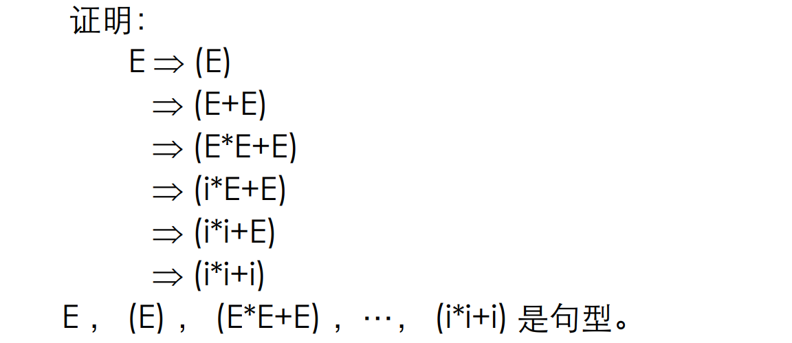
文法 ： ，的语言是什么 ?
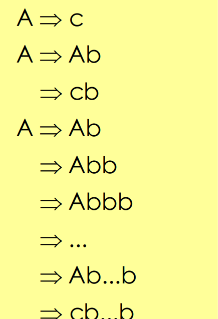
文法 ： ，，，的语言是什么 ?
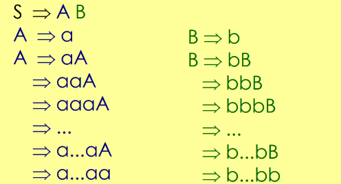
递归规则：是指在规则的左部和右部具有相同的非终结符的规则。
- 右递归：
- 左递归：
- 规则递归：
文法的递归性：是指文法中任一非终结符，若能建立一个推导过程，在推导所得的符号串中又出现了该非终结符本身。
- 文法右递归：
- 文法左递归：
- 文法递归：
当一个语言是无穷集合时，则定义该语言的文法一定是递归的；程序设计语言都是无穷集合，描述它的文法必定是递归的。
例：
- 给出产生语言为 的文法
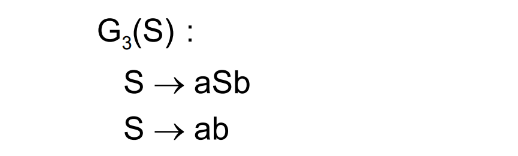
- 给出产生语言为 的文法
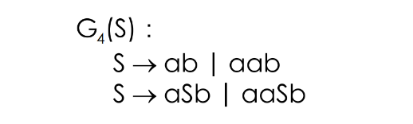
::: info 计算思维的典型方法——递归
问题的解决又依赖于类似问题的解决，只不过后者的复杂程度或规模较原来的问题更小，一旦将问题的复杂程度和规模化简到足够小时，问题的解法其实非常简单。
:::
若=，则称文法和是等价的。
例：
文法：，，和文法：，等价于
形式语言
一种不考虑含义的符号语言。
定义
序列的集合称为形式语言。
具体讲：每个形式语言都是某个字母表上按某种规则构成的所有符号的集合。即：任何一个字母表上符号串的集合均可定义为一个形式语言。
对形式语言的描述有两种方法：
- 当语言为有穷集合时，用枚举的方法。
- 当语言为无穷集合时，常用文法描述的方法。
分类
乔姆斯基于 1956 年建立形式语言体系，他把文法分成四种类型：0 ，1 ，2 ，3 型。
-
0 型文法 ( 短语文法，图灵机 )
产生式形如：
其中：，即至少含有一个非终结符；
-
1 型文法 ( 上下文有关文法，线性界限自动机 )
产生式形如：
其中： ，仅 例外
-
2 型文法 ( 上下文无关文法，非确定下推自动机 )
产生式形如：
其中：；
-
3 型文法 ( 正规文法，有限自动机 )
-
左线性文法
产生式形如： 或
其中：；
-
右线性文法
产生式形如： 或
其中：；
-
联系和区别
由四类文法的定义可知，4 个文法类的定义是逐渐增加限制的。
- 1~3 型文法都属于 0 型文法；
- 2、3 型文法如果存在形如的产生式，则不属于 1 型文法，如不存在则属于 1 型文法；
- 3 型文法属于 2 型文法；
区别：
- 1 型文法中不允许有形如的产生式存在，而 2、3 型文法允许；
- 0、1 型文法的产生式左部存在含有终结符号的符号串或两个以上的非终结符，而2、3 型文法的产生式左部只允许是单个的非终结符号；
推导
从一个句型到另一个句型的推导往往不唯一，可以分为
- 最左推导：任何一步都是对中的最左非终结符进行替换，例如
- 最右推导：任何一步都是对中的最右非终结符进行替换，例如
一般称最右推导为规范推导，规范推导的逆过程便是规范规约（最左规约）。
语法树
语法树
给定文法 G，对于 G 的任何句型都能构造与之关联的语法树（推导树、语法分析树、分析树）。
这棵树满足下列 4 个条件：
- 每个结点都用 G 的一个终结符或非终结符标记；
- 根的标记是开始符号；
- 内部结点一点是非终结符。如果某内部结点 A 有 n 个分支，它的所有子结点从左到右标记为，则一定是文法 G 的一个产生式；
- 如果某结点标记为，则它必须为叶结点且其是父结点的唯一子结点；
::: info 内部结点
内部结点是指非树叶结点，内部结点也包括根结点。
:::
语法树可以表示一个句型的推导过程。
例：
文法 ： 的句子 的语法树
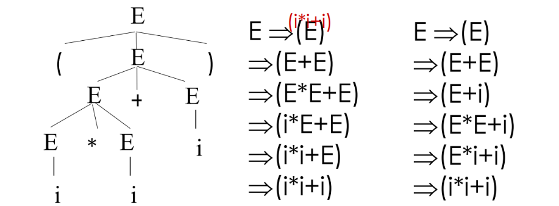
下图的推导树是文法 G 的句型 aabbaa 的推导过程。
把 aabbaa 叫做推导树的结果，把推导树叫做句型 aabbaa 的语法树。
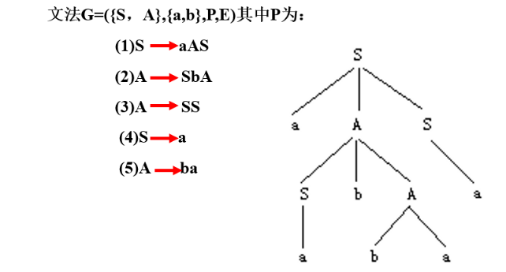
文法的二义性
若一个文法存在某个句子对应两棵不同的语法树，或者说，若一个文法存在某个句子有两个不同的最左推导或最右推导，则称这个文法是二义的。
例：
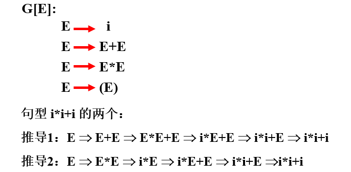
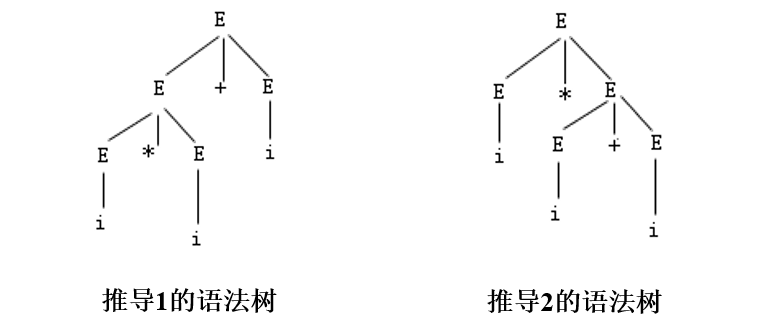
二义性的消除
对于二义性文法的句子，当编译程序对它的结构进行语法分析时，会产生多种不同的解释，由于语法结构的这种不确定性，必然导致语义处理上的不确定性。
文法的二义性和语言的二义性是两个不同的概念。
对于一个二义性的文法，如果能找到一个非二义性的文法，使得，则称该二义性文法的二义性是可以消除的。如果找不到，则二义性文法的描述的语言为先天二义性的。
::: info 总结
如果一个语言的每一个文法都是二义的，那么这个语言是先天二义性的。
:::
文法二义性消除的两种方法：
-
不改变文法中原有的语法规则，仅加进一些语法的非形式规定。例如加进运算符的优先顺序和结合规则等。
-
构造一个等价的无二义性文法。通过添加新的非终结符来消除文法中的二义性。
例：将文法 G 改写为无二义性的文法
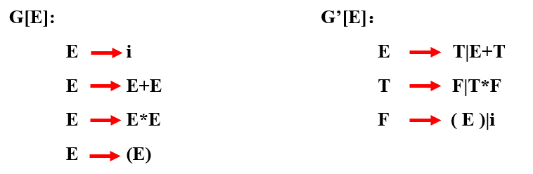
::: tip
二义性问题是不可判定问题，即不存在一个算法能在有限步骤内，确切地判定一个文法是否是二义的。
:::
::: info 描述程序设计语言时，对于上下文无关文法的限制
- 不含 形式的产生式；
- 每个非终结符 必须能推出终结符号串；
:::
语法分析
语法分析的任务：分析一个文法的句子结构。
语法分析器的功能：按照文法的产生式，识别输入符号串是否为一个句子。
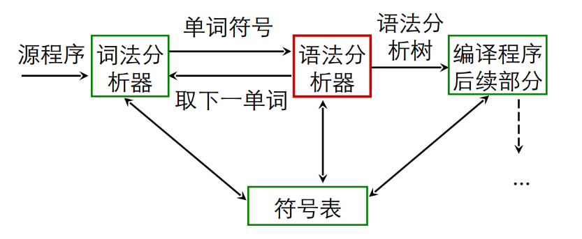
语法分析的方法通常分为两类，即自上而下分析方法和自下而上分析方法。
-
自上而下分析法：从文法的开始符号出发，根据文法的规则进行推导，最终推导出给定的句子来。
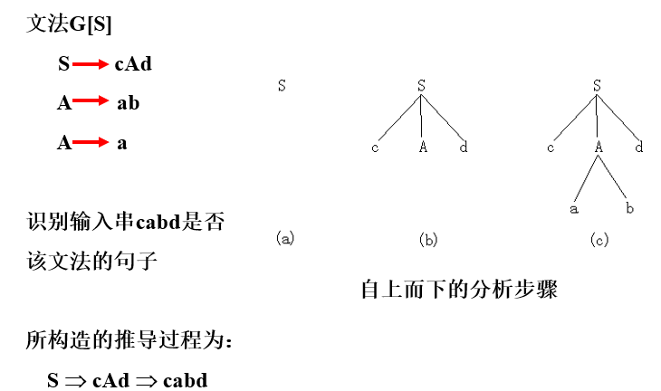
-
自下而上分析法：从给定的输入串开始，根据文法规则逐步进行归约，直至归约到文法的开始符号为止。
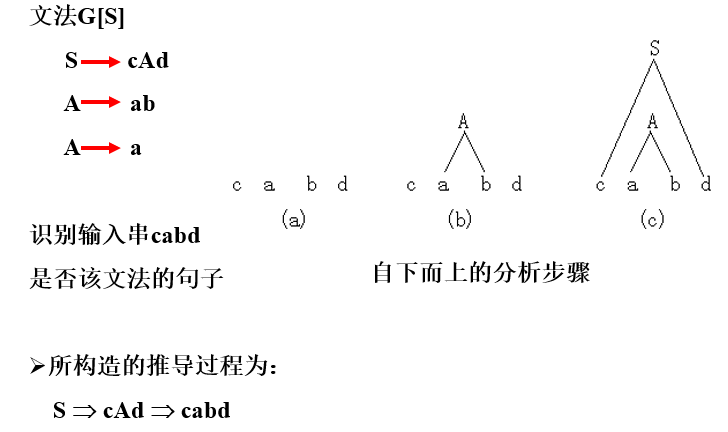
自上而下的语法分析
自上而下就是从文法的开始符号出发，向下推导，推出句子。
递归下降分析法
递归下降分析法是一种自上而下的分析方法，文法的每个非终结符对应一个递归过程。
多个产生式候选带来的问题
回溯
分析过程中，当一个非终结符用某一个候选匹配成功时，这种匹配可能是暂时的。出错时，不得不“回溯”。
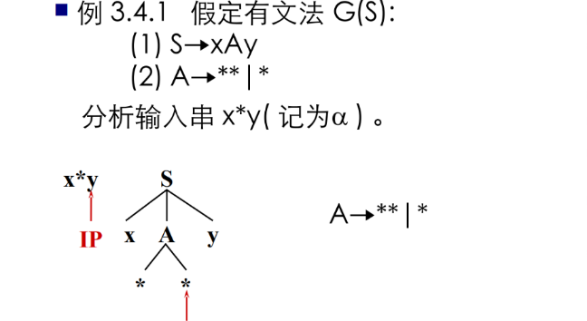
文法左递归问题
一个文法是含有左递归的，如果存在非终结符 P1
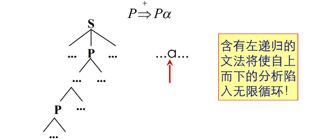
构造不带回溯的自上而下分析算法
消除文法的左递归性
假定关于非终结符 P 的规则为 ，我们可以把 P 的规则等价地改写为 和
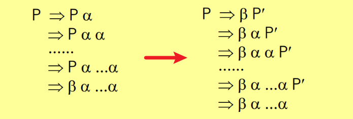
假定 P 关于的全部产生式是 ，那么消除 P 的直接左递归性就是把这些规则改写成： ，
直接左递归的消除
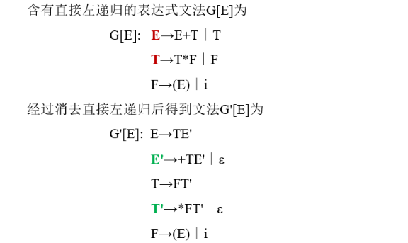
间接左递归的消除
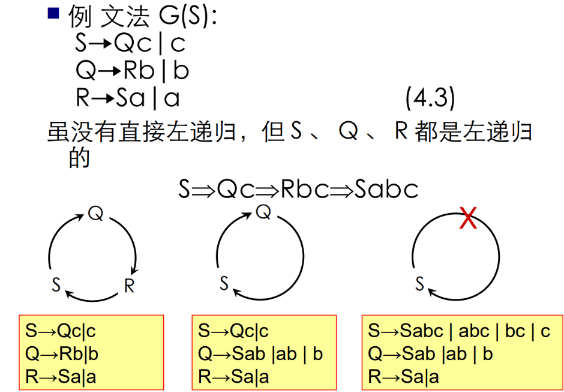
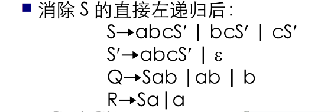
克服回溯
回溯发生的原因在于候选式存在公共的左因子，如： 。此时如果输入串待分析的字符串前缀为 ，则选用哪个候选式以寻求与输入串匹配就难以确定。
倘若候选式不含公共左因子，则推导出的首字符能与输入串匹配的那个候选式便是惟一的匹配。
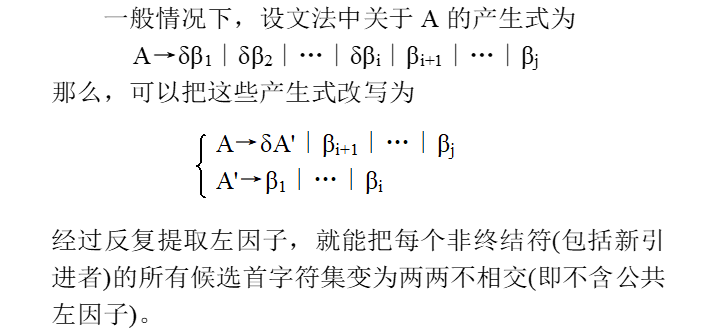
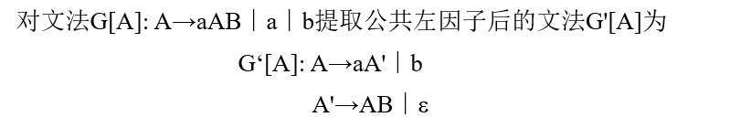
LL(1)分析法
LL(1)分析法又称预测分析法，是一种不带回溯的非递归自上而下分析法。
LL(1)的含义是：
- 第一个 L 表明自上而下分析是从左至右扫描输入串的；
- 第二个 L 表明分析过程中将用最左推导；
- “1”表明只需向右查看一个符号就可决定如何推导（即可知用哪个产生式进行推导）。
类似地，也可以有 LL(k)文法，也就是向前查看 k 个符号才能确定选用哪个产生式，不过 LL(k)(k>1)在实际中极少使用。
表驱动的 LL(1)分析器
LL(1)分析法的基本思想是根据输入串的当前输入符号来唯一确定选用某条产生式来进行推导；当这个输入符号与推导的第一个符号相同时，再取输入串的下一个符号，继续确定下一个推导应选的规则；如此下去，直到推导出被分析的输入串为止。
一个 LL(1)分析器由一张LL(1)分析表（也称预测分析表）、一个先进后出分析栈和一个控制程序(表驱动程序)组成。
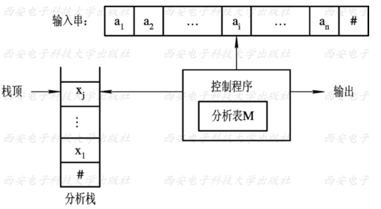
关于 LL(1)分析器的说明：
-
输入串是待分析的符号串，它以界符 ‘#’ 作为结束标志。
但不是文法符号，是由分析程序自动添加的。
-
分析栈中存放分析过程中的文法符号。
分析开始时栈底先放入一个‘#’ ，然后再压入文法的开始符号；当分析栈中仅剩‘#’ ，输入串指针也指向串尾的‘#’时，分析成功。
-
分析表用一个矩阵（或二维数组）M 表示，它概括了相应文法的全部信息。
矩阵的每一行与文法的一个非终结符相关联，而每一列与文法的一个终结符或界符‘#’相关联。
分析表元素 M[A,a]中的内容为一条关于 A 的产生式，表示当 A 面临输入符号 a 时当前推导所应采用的候选式；当元素内容为空白（空白表示“出错标志”）时，则表明 A 不应该面临这个输入符号 a，即输入串含有语法错误。
-
控制程序根据分析栈顶符号 x 和当前输入符号 a 来决定分析器的动作。
-
若 x = a =‘#’ ，则分析成功，分析器停止工作。
-
若 x = a ≠ ‘#’ ，即栈顶符号 x 与当前扫描的输入符号 a 匹配；则将 x 从栈顶弹出，输入指针指向下一个输入符号，继续对下一个字符进行分析。
-
若 x 为一非终结符 A，则查 M[A,a]：
若 M[A,a]中为一个 A 的产生式，则将 A 自栈顶弹出，并将 M[A,a]中的产生式右部符号串按逆序逐一压入栈中；如果 M[A,a]中的产生式为，则只将 A 自栈顶弹出。
若 M[A,a]中为空，则发现语法错误，调用出错处理程序进行处理。
-
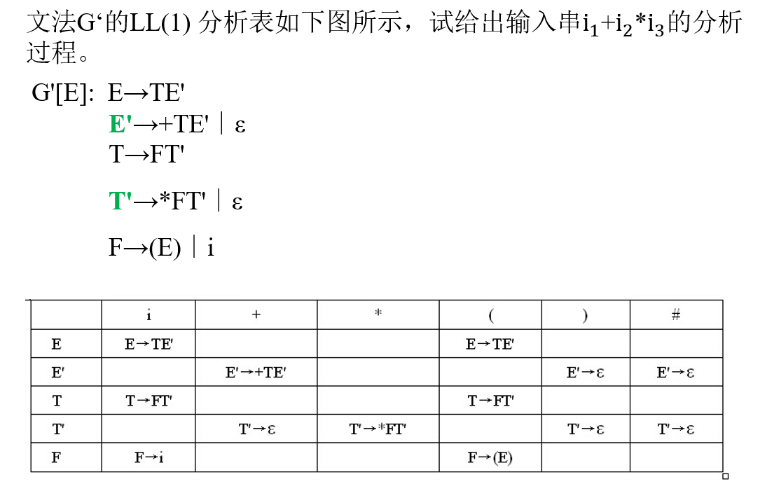
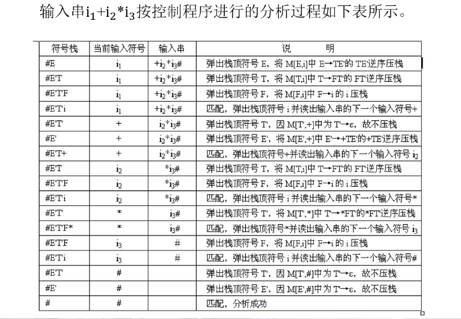
LL(1)分析表的构造
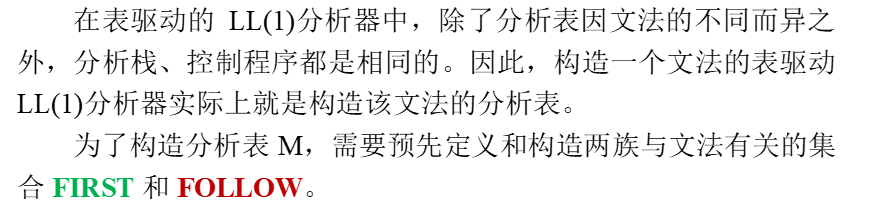
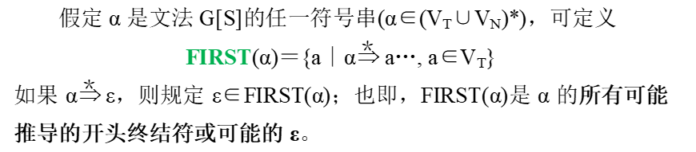
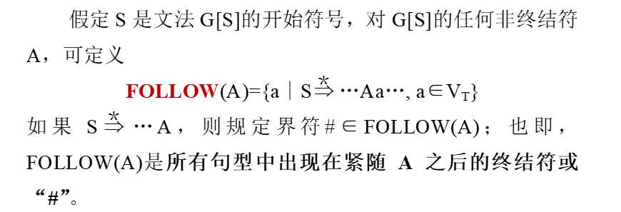
FIRST 集构造方法：对文法中的每一个非终结符 X 构造 FIRST(X)，其方法是连续使用下述规则，直到每个集合的 FIRST 不再增大为止。
-
若 ，则 FIRST(X) = {X}。
-
若 ，且有产生式，则把 a 加入到 FIRST(X) 中；若也是一条产生式， 则把也加到 FIRST(X) 中。
-
若有，且，则将 FIRST(Y)中的所有非元素都加入到 FIRST(X)中。
-
若有，且都是非终结符，
- 若的候选式都有存在，则把 FIRST()()的所有非元素都加入到 FIRST(X)中；
- 若均含有产生式时，应把也加到 FIRST(X)中。
::: tip
对终结符 a 而言，FIRST(‘a’)={a}，因而无需构造。
:::
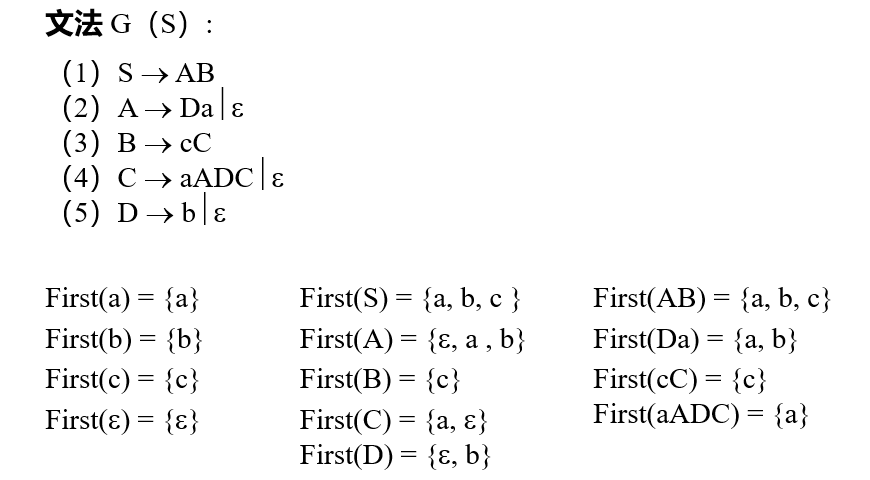
FOLLOW 集构造方法：对文法的每个非终结符 A 构造 FOLLOW(A)的方法是连续使用下述规则，直到每个 FOLLOW 不再增大为止。
- 对文法开始符号 S，置#于 FOLLOW(S)中（由语句括号“#S#”中的 S#得到）。
- 若有（可为空），则将除了加入到 FOLLOW(B)中。
- 若有或，且（即），则把 FOLLOW(A)加到 FOLLOW(B)中（此处的也可为空)
::: tip
FOLLOW 集合不存在
:::
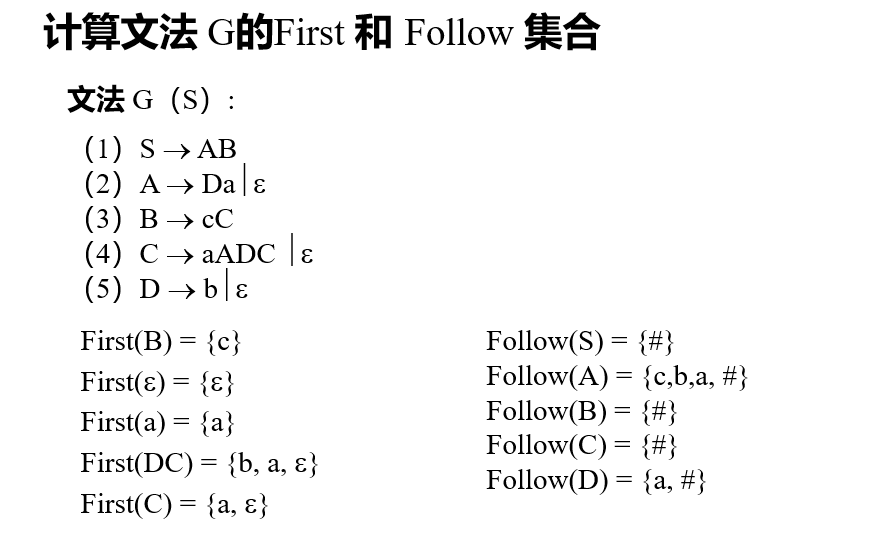
视频：https://www.bilibili.com/video/BV11t411V74n?t=2384.1&p=14
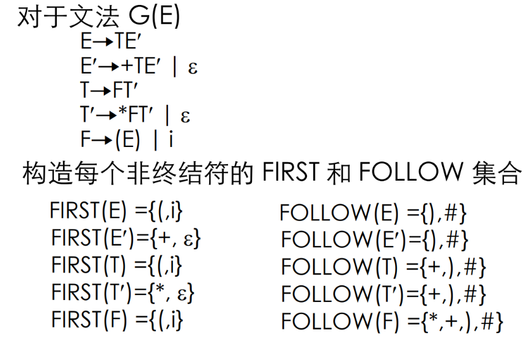
构造分析表 M
构造文法 G 的分析表 M[A,a] ，就是确定每个产生式 在表中的位置。
- 对文法 G[S]的每个产生式 执行以下 2、3 步。
- 对每个终结符，把 加入到 M[A,a]中，其中为含有首字符 a 的候选式或为惟一的候选式。
- 若，则对任何属于 FOLLOW(A)的终结符 b，将加入到 M[A,b]中。
- 把所有无定义的 M[A,a]标记为“出错”。
https://www.bilibili.com/video/BV11t411V74n?t=1980.8&p=16
根据上面 G(E)的 FIRST 集和 FOLLOW 集，构造分析表
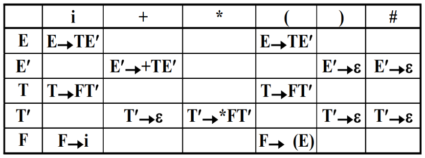
LL(1) 文法与二义性
如果一个文法是左递归或二义的，那么 M 至少含有一个多重定义入口。
如果一个文法的分析表 M 不含多重定义入口，则称它是一个 LL(1)文法，它所定义的语言恰好就是它的分析表所能识别的全部句子。
一个上下文无关文法是LL(1)文法的充分必要条件是：对每一个非终结符 A 的任何两个不同产生式，有下面的条件成立：
-
；
意味着 A 的每个候选式都不存在相同的首字符，它避免了在分析表的同一栏目内出现多个产生式的情况，即避免了多重入口。
-
假若，则有；
避免了在分析表的同一栏目内出现和（同样是避免多重入口）。
例如文法： ，有，；
此时文法对应的中 M[A, a] 栏里必然有两个产生式和存在，即形成了多重入口，；
::: tip
LL(1)文法首先是无二义的，其次是不含左递归和消除回溯的。
:::
自下向上的语法分析
自下向上的语法分析与自顶向下的语法分析相比，它无需消除左递归和回溯；
对某些二义文法，也可以采用自下向上分析方法，因此，自下向上分析的适用范围更大。
自下而上分析的基本问题
自下而上分析法就是从输入串开始，逐步进行归约，直到归约到文法的开始符号。
::: info 归约
根据文法的产生式规则，把产生式的右部替换成左部符号。
:::
自下而上分析法是一种“移进—归约”法，这是因为在自下而上分析过程中采用了一个先进后出的分析栈。
把输入符号自左至右逐个移进分析栈，并且边移入边分析，一旦栈顶的符号串形成某个句型的句柄就进行一次归约，即用相应产生式的左部非终结符替换当前句柄。
接下来继续查看栈顶是否形成新的句柄，若为句柄则再进行归约；若栈顶不是句柄则继续向栈中移进后续输入符号。不断重复这一过程，直到将整个输入串处理完毕。
若此时分析栈只剩有文法的开始符号则分析成功，即确认输入串是文法的一个句子；否则，即认为分析失败。
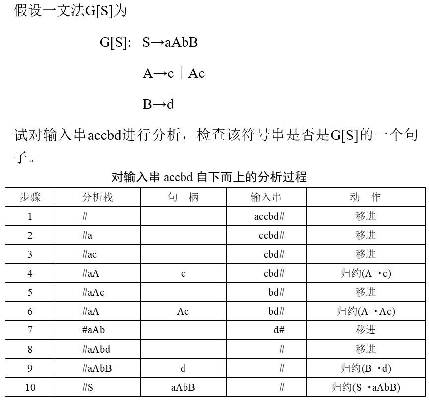
短语
-
短语
设 是文法的一个句型，如果有：且
则称是句型关于非终结符的一个短语，或称是的一个短语。
特别是有产生式时，为句型的一个直接短语或简单短语。
例：文法 ：
- 由，可知是的一个短语，并且是直接短语。
- 由，可知是的一个短语，但不是直接短语。
- 是自身的短语。
-
句柄
一个句型的最左直接短语称为该句型的句柄。
一个句型的直接短语可能不止一个，但最左直接短语则是唯一。
-
素短语
素短语是指这样一种短语，它至少包含一个终结符，并且除自身之外，不再包含其它更小的素短语。
最左素短语则是指处于句型最左边的那个素短语。
语法树的某个内部结点连同它的所有后代组成了一棵子树，只含有单层分枝的子树称为简单子树。
子树与短语的联系十分密切，在子树中
-
短语
子树的末端结点组成的符号串是相对于子树根的短语；
由内部结点向下生长的全部树叶自左至右的排列。
每个内部结点都有一个短语，也可能多个内部结点的短语是同一个。
-
直接短语
简单子树的末端结点组成的符号串是相对于简单子树根的直接短语；
内部结点直接一步生长出来的结点全部由树叶组成（即以该内部结点为根的子树是简单子树），该全部树叶自左至右的排列即为直接短语。
-
句柄
最左简单子树的末端结点组成的符号串为句柄；
-
素短语
子树的末端结点组成的含终结符的符号串，且在该子树中不再含有终结符的更小子树。
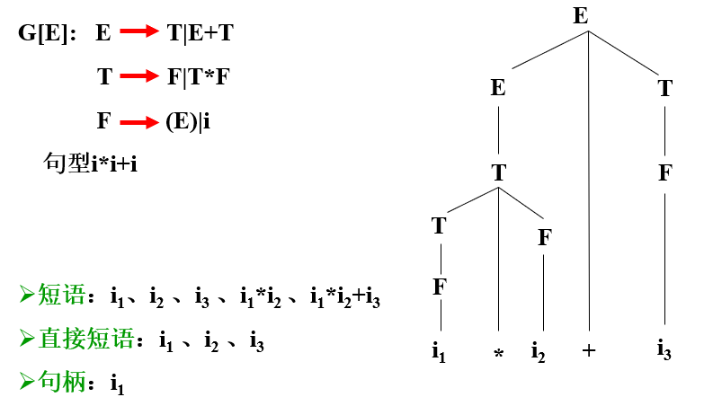
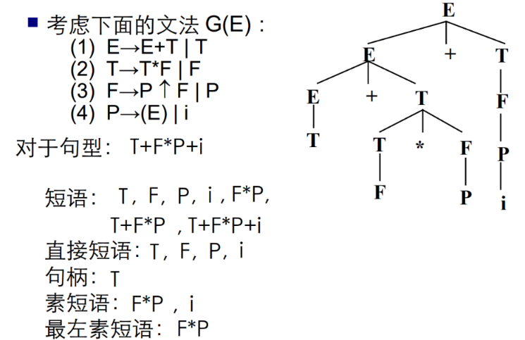
::: tip 比较
- 直接短语是在短语的基础上增加了只能向下生长一步且向下生长一步所产生的结点都是树叶结点这一限制；
- 句柄是在直接短语的基础上增加了“最左”这一限制；
:::
规范归约
假定是文法 G 的一个句子，有一个序列 ，如果此序列满足：
- ，是文法的开始符号
- 对任何 ， ， 是从 经把句柄替换成为相应产生式左部符号而得到的
则称次序列是的一个规范归约。
由规范推导推出的句型称为规范句型。
::: tip 为什么要叫规范归约
因为规范归约得到的分析树一定是与语法树一致的。
:::
算符优先分析法
考虑二义文法文法 ，它的句子有几种不同的规范归约。
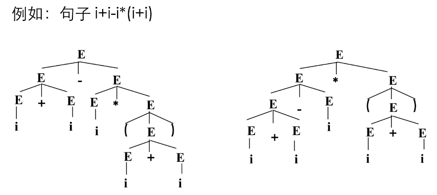
归约即计算表达式的值。归约顺序不同， 则计算的顺序也不同，结果也不一样。
如果规定算符的优先次序，并按这种规定进行归约，则归约过程是唯一的。所谓算符优先分析法就是定义算符 ( 终结符 ) 之间的某种优先关系，借助于这种关系寻找“可归约串”和进行归约。起决定作用的是相继两个算符 ( 终结符 ) 之间的优先关系。
定义任何两个可能相继出现的终结符 a 与 b 的三种优先关系：
- 𝑎 ⋖ 𝑏：𝑎 的优先级低于 𝑏
- 𝑎 ≖ 𝑏：𝑎 的优先级等于 𝑏
- 𝑎 ⋗ 𝑏：𝑎 的优先级高于 𝑏
::: tip
a⋖b 并不意味着 b⋗a ，如( ⋖ + 和 + ⋖ (
:::
算符优先文法
一个文法，如果它的任一产生式的右部都不含两个相继 ( 并列 ) 的非终结符，即不含 形式的产生式右部，则我们称该文法为算符文法。
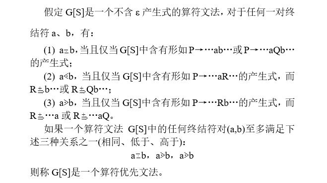
::: tip
算符优先文法首先应是一个算符文法。
:::
算符优先关系表
如果能把终结符之间的优先关系都找出来，那么我们就能得到一张二维表。
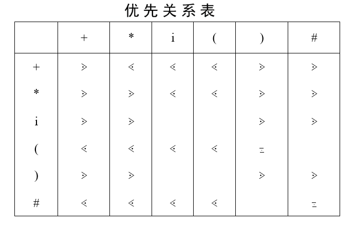
构造优先关系表
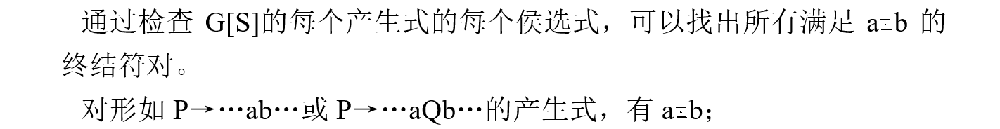
为了找出所有满足关系“ ⋖ ”和“ ⋗ ”的终结符对，我们需要对 G[S]的每个非终结符 P 构造两个集合 FIRSTVT(P)和 LASTVT(P)：
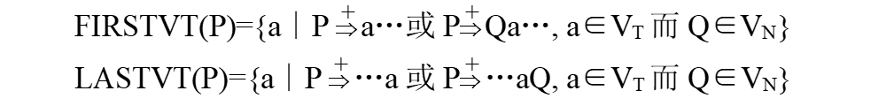
::: tip
与 LL(1)文法相比，
- FIRST(A)是推导出的第一个终结符集，而 FIRSTVT 是首先遇到的终结符集；
- FOLLOW(A)是指紧跟非终结符 A 后的终结符集，而 LASTVT 是最后遇到的终结符集。
:::
FIRSTVT 集的构造方法：
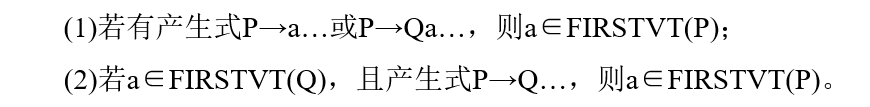
LASTVT 集的构造方法：
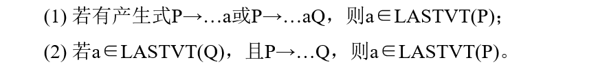
其它例子：https://www.bilibili.com/video/BV11t411V74n?t=1942.8&p=19
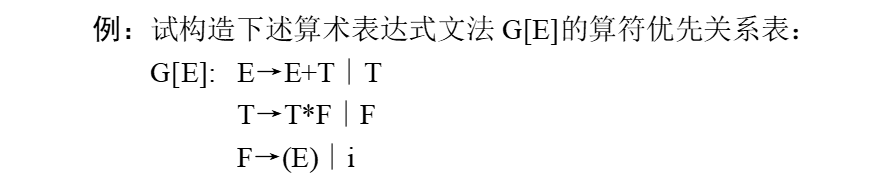
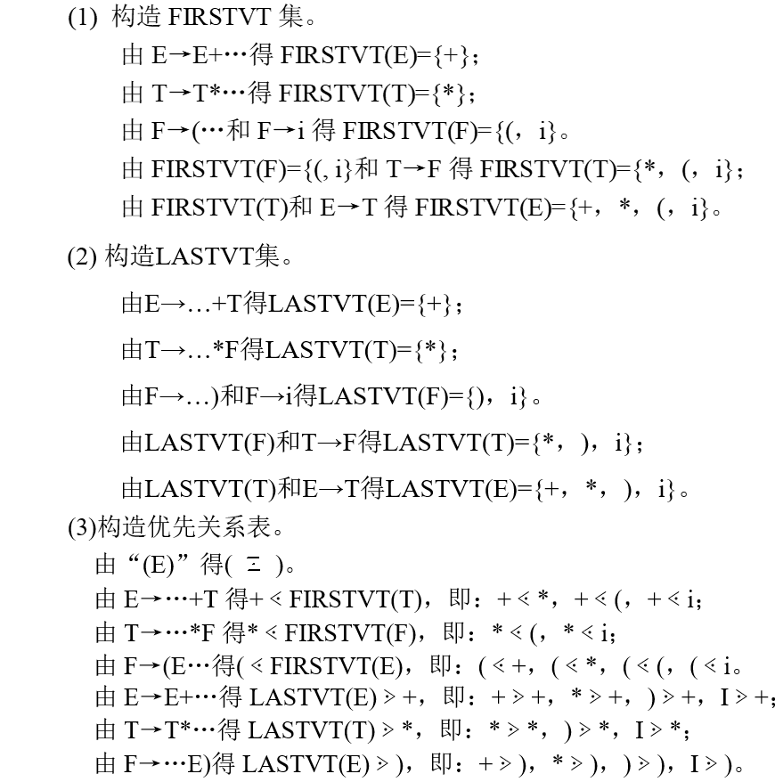
算符优先分析算法的设计
由于算符优先分析法不是一种规范归约的分析方法，它仅在终结符之间定义了优先关系而未对非终结符定义优先关系，这样就无法使用优先关系表去识别由单个非终结符组成的可归约串。
因此，算符优先分析法实际上不是用句柄来刻画“可归约串”，而是用最左素短语来刻画“可归约串”。
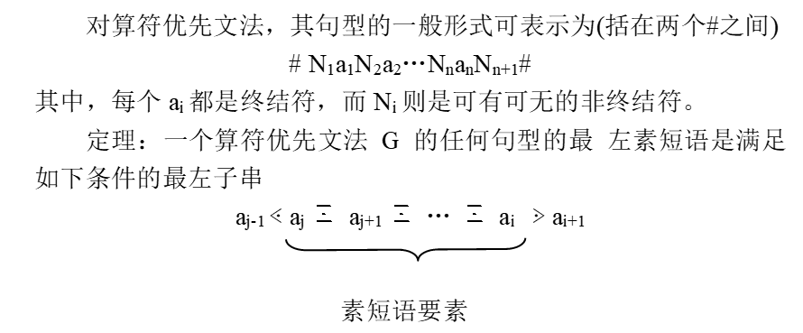
查找最左素短语的方法：
-
最左子串法
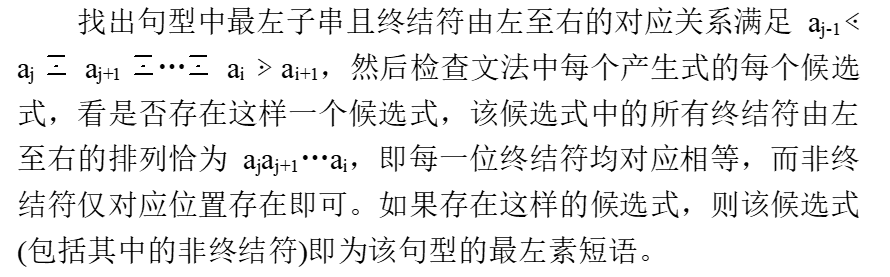
-
语法树法
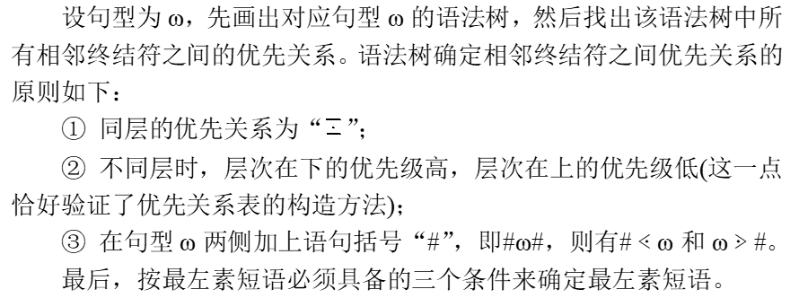
算符优先分析法特点
- 优点 : 简单，快速；
- 缺点 : 可能错误接受非法句子，能力有限；
优先函数
用优先关系表来表示每对终结符之间的优先关系时，存在的缺点是存储量大、查找费时。
因此使用优先函数，对终结符 a、b 之间的优先关系比较转换为两个优先函数值的比较。好处是节省空间和便于进行比较运算。
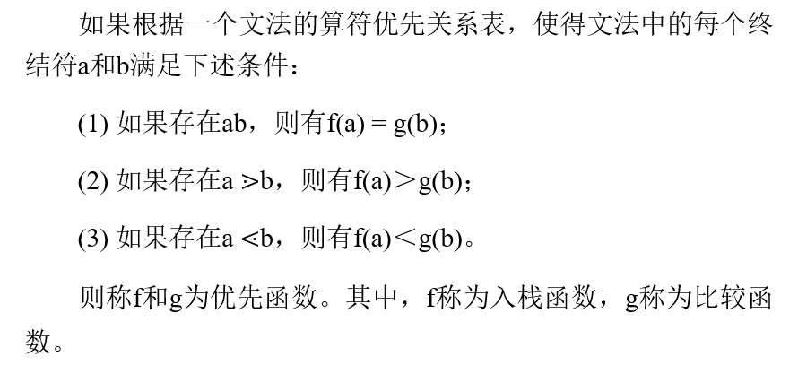
::: tip
-
对应一个优先关系表的优先函数不是惟一的；只要存在一对，就存在无穷多对。
-
许多优先关系表不存在对应的优先函数。
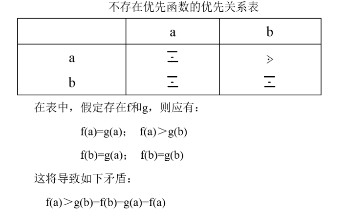
::
根据优先关系表构造优先函数的两种方法：
-
关系图法
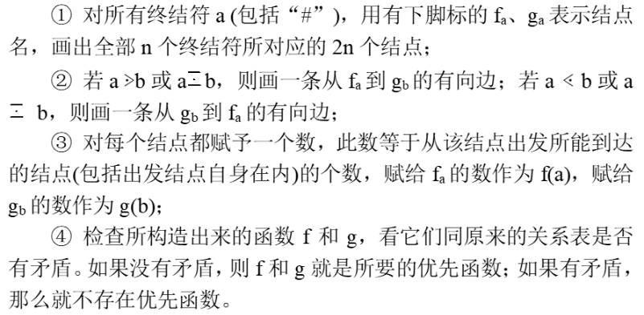
-
直接构造
LR 分析法
LR 分析法是一种自底向上进行规范归约的语法分析方法，LR 指“自左向右扫描和自底向上进行归约”。
LR 分析法的一个主要缺点是，若用手工构造分析器则工作量相当大，因此必须求助于自动产生 LR 分析器的产生器。
LR 分析器的工作原理
规范归约的关键问题是寻找句柄 。
LR 分析方法：把已移入符号栈的内容及根据产生式推测未来可能遇到的输入符号综合抽象成状态；由栈顶的状态和现行的输入符号唯一确定每一步工作。
LR 分析器的核心是一张分析表
- ACTION[s, a]：当状态 s 面临输入符号 a 时 ，应采取什么动作。
- GOTO[s, X]：状态 s 面对文法符号 X 时，下一状态是什么。
- ：移进，指把下一状态 j 和现行输入符号 a 移进栈，下一输入符号变成现行输入符号。
- ：归约，指按文法的第 j 个产生式进行归约；
- acc：表示分析成功；
- 空白格：出错
输入串 i+i*i 的归约过程用语法树表示，如下图所示。
从分析过程可以看出，每次归约恰好是语法树中的句柄，这种归约过程实际上就是修剪语法树的过程，直到归约到树根（也即文法开始符 E）为止。
因此，LR 分析法解决了在语法分析过程中寻找每一次归约的句柄问题。
我们主要关心的问题是如何由文法构造 LR 分析表。
对于一个文法，如果能够构造一张分析表，使得它的每个入口均是惟一确定的，则称这个文法为LR 文法。
一个文法如果能用一个每步最多向前检查 k 个输入符号的 LR 分析器进行分析，则这个文法就称为LR(k)文法。
对于一个文法，如果它的任何“移进—归约”分析器都存在这样的情况：尽管栈的内容和下一个输入符号都已了解，但仍无法确定是“移进”还是“归约”，或者无法从几种可能的归约中确定其一，则该文法是非 LR(1)的。
::: tip
LR 文法肯定是无二义的，一个二义文法决不会是 LR 文法；但是，LR 分析技术可以进行适当修改以适用于分析一定的二义文法。
:::
介绍四种分析表的构造方法，它们是：
- LR(0)表构造法：这种方法局限性很大，但它是建立一般 LR 分析表的基础。
- SLR(1)表(即简单 LR 表)构造法：这种方法较易实现又极有使用价值。
- LR(1)表(即规范 LR 表)构造法：这种表适用大多数上下文无关文法，但分析表体积庞大。
- LALR 表(即向前 LR 表)构造法：该表能力介于 SLR(1)和 LR(1)之间。
LR(0)分析器
LR(0)项目集规范族的构造
- 字的前缀，是指该字的任意首部，例如字 abc 的前缀有 ε、a、ab 或 abc。
- 活前缀，是指规范句型的一个前缀，这种前缀不含句柄之后的任何符号。
在 LR 分析工作过程中的任何时候，栈里的文法符号(自栈底而上)应该构成活前缀，把输入串的剩余部分匹配于其后即应成为规范句型（如果整个输入串确为一个句子的话）。
规范归约过程中，保证分析栈中总是活前缀 ，就说明分析采取的移进—归约动作是正确的。
项目表示我们在分析过程中看到了产生式多大部分。
文法 G 的每个产生式的右部添加一个圆点称为 G 的 LR(0)项目。
- 圆点“ · ”指出了分析过程中扫描输入串的当前位置；
- 圆点“ · ”前的部分为已经扫描过的符号串，构成了一个活前缀；
- 圆点“ · ”后的部分为待扫描的符号串；
由于产生式的项目与识别 NFA 的状态相对应，因此可以用项目来构造 NFA。
因为在 NFA 中发生状态转换的非终结符 B 不可能由输入串（由终结符组成）提供，而必须由 NFA 的归约来产生，这就要启动另一路 NFA 来识别（归约出）所需要的非终结符 B。
例如，若非终结符 B 的产生式为，则在含项目的状态中就应加入项目，称为 A 的闭包项。也即，要获得非终结符 B，就必须先识别 B 的产生式，这就意味着在识别 A 的 NFA 中嵌入了识别 B 的 NFA。
如果闭包项中的 e 是另一个非终结符 R，即闭包项为的话，则仍然是一个待约项目，也即在图中还应加入识别 R 的闭包项。
如此下去，不断在同一个状态中加入闭包项直至没有新的“待约项”出现为止。这样，就把识别活前缀的 NFA 确定化，形成了一个识别产生式的 DFA，此时的状态也可能不再是含有一个项目，而是含有多个项目，我们称其为项目集。
构成识别一个文法活前缀的 DFA 的项目集（状态）的全体称为这个文法的 LR(0) 项目集规范族。
LR(0)分析表的构造
::: tip 拓广文法
:::
假若一个文法 G 的拓广文法 G‘ 的活前缀识别自动机中的每个状态 ( 项目集 ) 不存在下述情况：
- 既含移进项目又含归约项目
- 含有多个归约项目
则称 G 是一个 LR(0) 文法。
对于 LR(0)文法，我们可直接从它的项目集规范族 C 和活前缀自动机的状态转换函数 GO 构造出 LR 分析表。
由于假定 LR(0)文法规范族的每个项目集不含冲突项目，因此按上述方法构造的分析表的每个入口都是惟一的(即不含多重定义)。
我们称如此构造的分析表是一张 LR(0)表，使用 LR(0)表的分析器叫做一个 LR(0)分析器。
> > > >
项目集的构造原则是：只要紧随在“ · ”之后的符号是非终结符，则该非终结符所有以“ · ”开头的项目全都纳入到该项目集；如果这些新纳入的项目中，又在“ · ”后紧随出现新的非终结符，则这些新的非终结符所有以“· ”开始的项目也全部纳入该项目集。
::: tip 检查所构造的 DFA 是否完整
对一个项目集来说，除了归约项目之外，对于其余移进项目，“ · ”之后有多少个不同的首字符(包括非终结符)，就要引出多少条有向边到不同的项目集(也可能有一条有向边到此项目集自身)。
:::
掌握了上述构造原则和方法后，则可在写出拓广文法后就直接画出该文法的 DFA，而无需再列出 LR(0) 的所有项目和构造 LR(0) 项目集规范族。